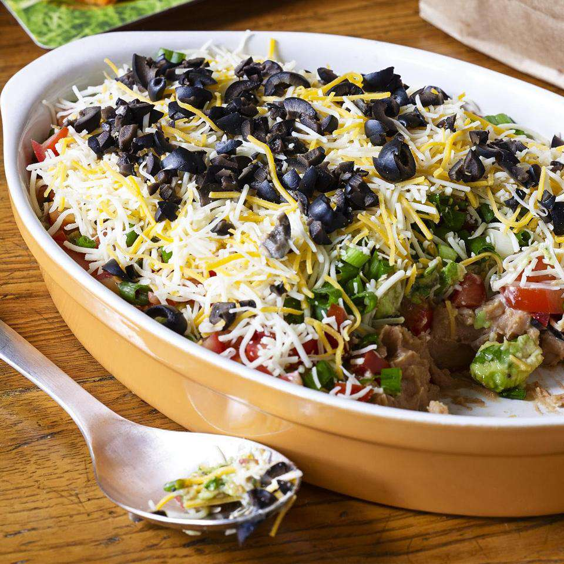

7-Layer Dip

Description
Tortilla chips are perfect with guacamole, sour cream, veggies, and cheese, and this
7-Layer dip combines all of these ingredients into one! This dip takes very little time to
prepare and produces about 64 servings.
Ingredients
- 2 avocados - peeled, pitted and diced
- ¼ cup chopped fresh cilantro
- ¼ cup salsa
- 1 ½ tablespoons fresh lime juice
- ¼ teaspoon garlic salt
- Ground black pepper to taste
- 1 (8 ounce) container sour cream
- 1 (1 ounce) package taco seasoning mix
- 1 (16 ounce) can refried beans
- 4 roma (plum) tomatoes, diced
- 1 bunch green onions, finely chopped
- 2 cups shredded Mexican-style cheese blend
- 1 (2.25 ounce) can black olives - drained and finely chopped
Steps
- Gather the ingredients.
- Mash the avocados and mix in cilantro, salsa, lime juice, garlic salt, and pepper.
- In another bow, blend sour cream and taco seasoning in a small bown until combined.
- On a large serving platter, spread refried beans and top with the sour cream mixture.
- Cover the dip with guacamole and top with tomatos, green onions, cheese, and black olives. Enjoy!